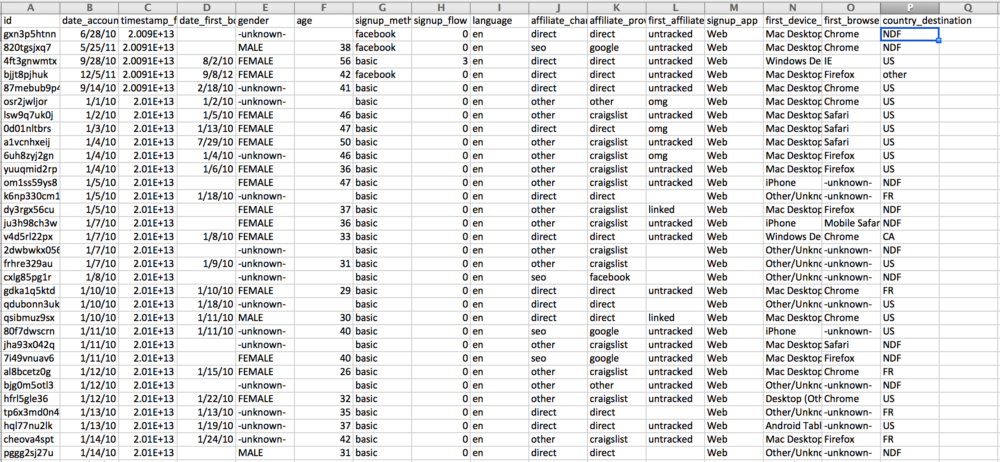
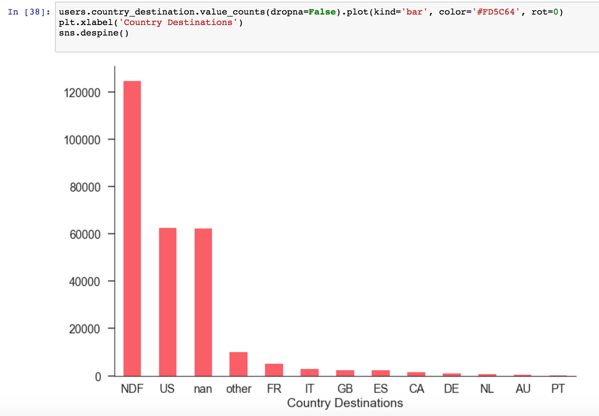

Name: Binh Le
E-mail: binhle@mit.edu
Other Assignments:
What about the structure of this dataset might make it harder to feed into a machine learning model? (Hint: is all the information in users.csv useful?): There are a lot of columns that we won't need in order to help us predict where travelers may want to go next. Some of the columns and data is specifically related to AirBnb bookings and details. Before training our model we will want to clean the data and get rid of the columns we don't need. Also not every row in the dataset is filled out, so it might not all be usable for our model.
Is this dataset a good fit for the task at hand? What problems could you think of that might make this dataset not useful?: We are trying to predict where an American tourist will want to travel next. This dataset seems like a good fit because it could tell us which countries people have traveled to so if someone has traveled to a country, we could recommend them another country to travel to based on other people who have traveled to the same country. It might not be useful if we don't know if the people in the dataset are American or are traveling as tourists because that is the specific type of person we want to create a model for.
Using the kernel provided as a starting point, build another data visualization or compute another statistic that might be relevant for the dataset. Take a picture of the code that you write, and of any outputs and visualizations that you create: I decided to visualize the country destinations from the dataset. There is a lot of rows with the destination NDF (no destination found), meaning that there was not a booking. The top three most frequent destinations in order were the USA, nan, and other. This shows that if we want to predict the next destination for travelers by correlating where similar tourists have gone, we might need a wider range of data for country destinations or else our model won't have enough training data.
Brainstorm data collection for your project and summarize your strategy for the writeup: For our project, we want to create a model to predict the results of the 2018 League of Legends World Championship. In order to train the model, we will need data for professional games that will help us determine how certain teams and play styles match up against different opponents. There is a dataset on Kaggle named 'League of Legends' that has tracked professional game data across all leagues except China since 2015. It gives detailed team statistics for each match such as champion kills, gold difference, tower kills, and minion kills.
This dataset gives us clean team data but if we want detailed individual player data we could also scrape data like in the workshop for this assignment. However, team data and teamwork will probably be more important in determining the result of professional matches. The Riot Games API is another option for getting League of Legends data, but it only allows for the searching of games for individual players. This makes it harder to get good game data for matches where two professional teams are playing each other.